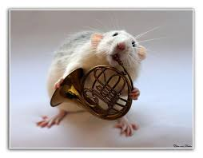

Bringing Music to Animals
Ever wonder if your pet has any musical talent? We can help you find out! We offer music classes for shelter animals as well as private lessons for your pet.

Join us for Jazz Night at Not Kitten Around!
6 pm August 14, 2016 at the Jazz Alley in Seattle
Tickets
It is summertime in Seattle and that means our annual Walk for the Animals is happening soon!
Join us at 11am August 20, 2016 in Marymoor Park
Dogs welcome!
Register Now!
Sandy the dog was featured on Seattle Met this week! Check out the article here.
For more information about our classes click here